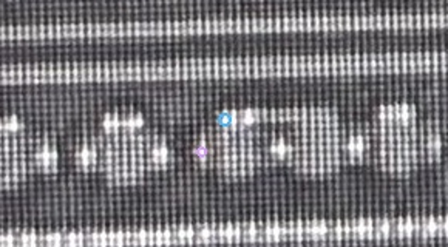
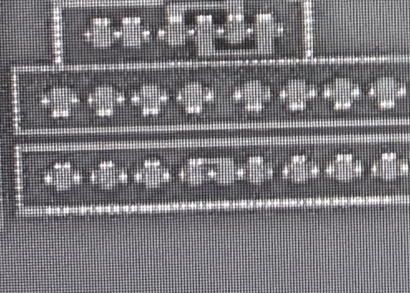
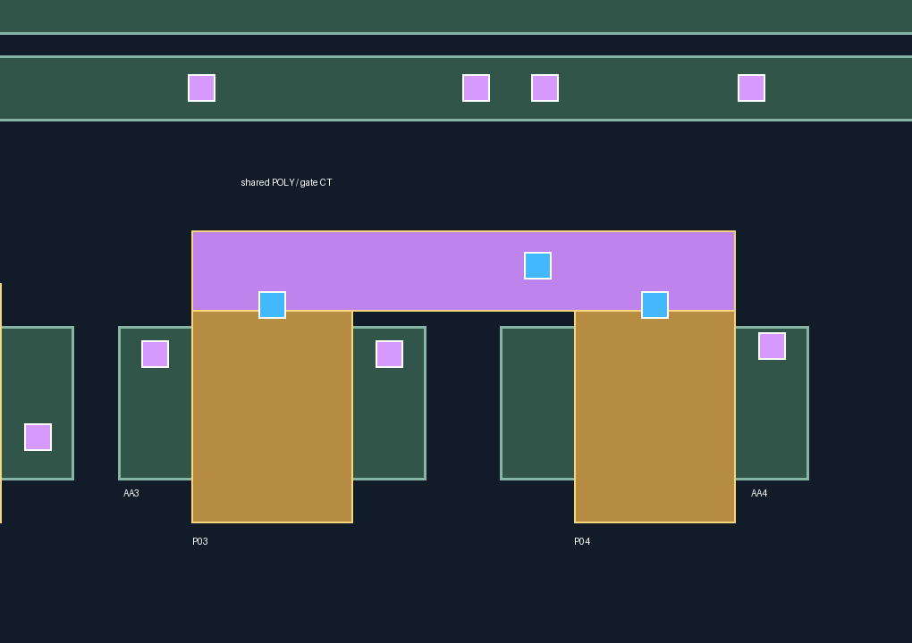
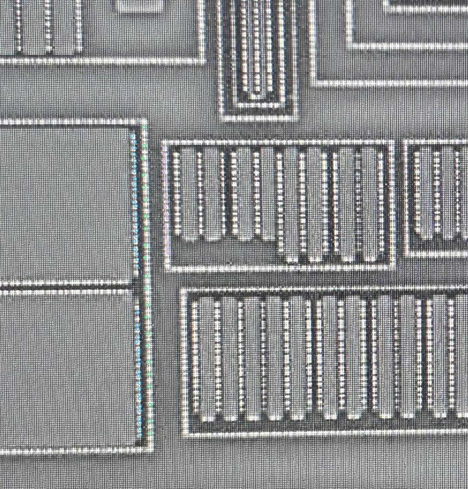
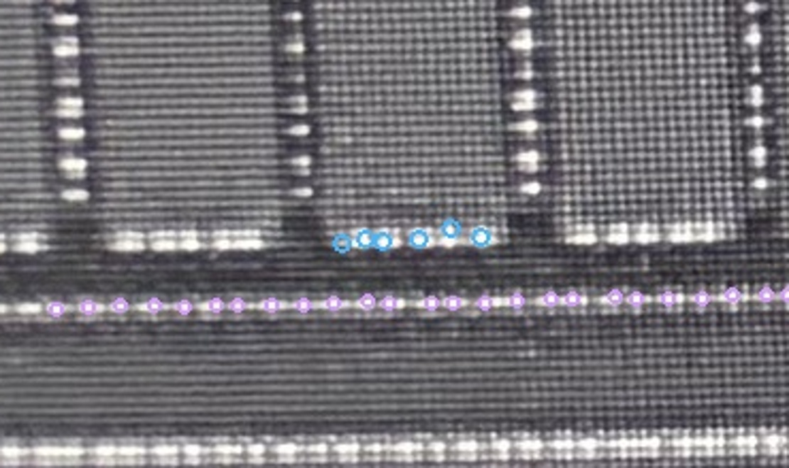

| 项 | 本次记录 |
|---|---|
| S1 | 三列身份与相对位置合理，批准范围已记录。 |
| S2 | 修改合理，批准范围已记录。 |
| S3 | 紫色为源漏端；蓝色是两管POLY合并、向上引出的栅端CT。 |
之前把蓝色登记为AA4左源漏CT的判断错误。该误归属记录已退休，以新编号登记到共用上端POLY；紫色及其他10286条CT记录保持。新增1个POLY桥对象表达共用连接，原两条栅指保留；桥的精确轮廓仍是AI规则几何候选，不增加器件数量。
修订记录 · 人工裁决范围 · 联合检查 · 历史来源复查页
原生照片标记位置不动，只纠正材料／端子身份；联合图使用规则设计坐标，左右图未经互相投影。



绿色：AA；黄色：原栅指；上侧紫色横桥：共用POLY；蓝孔：POLY CT；紫孔：源漏CT。CT编号为CT-G66-P03-P04-SHARED-TOP-01。
原误归属的AA4左侧是否另有源漏CT仍未知，不借用蓝色栅CT、不凭空补孔。本处仅作来源身份修订，不声明新的M1连接或网表。


本次没有把S1／S2批准扩展为整层逐孔或精确边界批准，原5处来源限制继续保留。